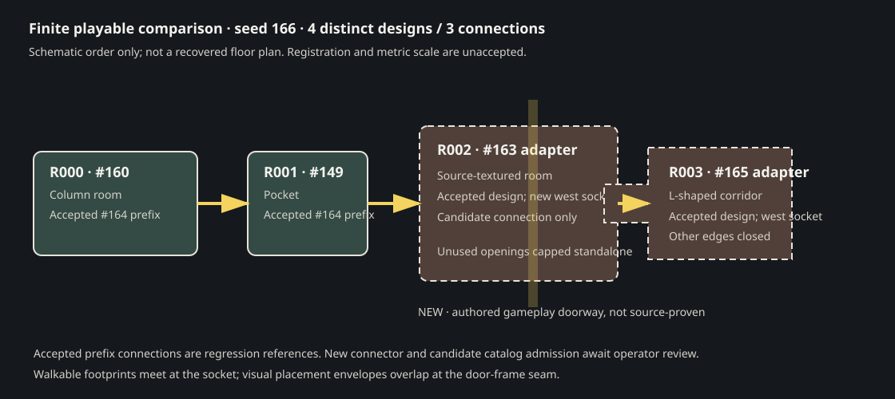
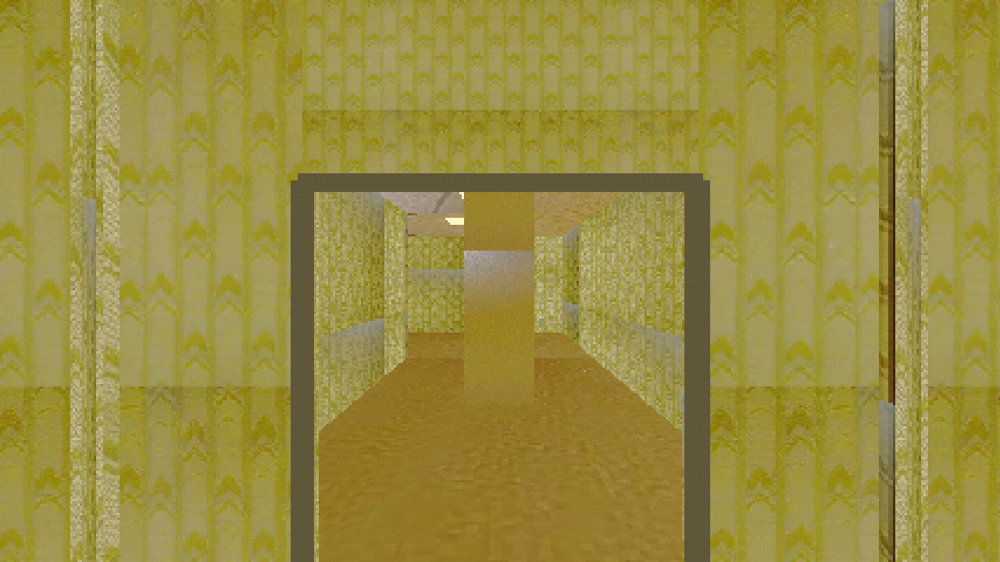
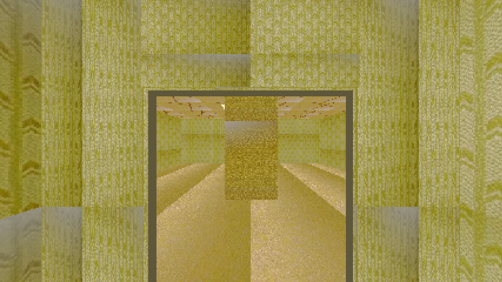

Operator accepted this exact layout and connection. Candidate modules remain unadmitted to the shared catalog. The new doorway is authored game geometry; source footage does not establish that these spaces connect. The accepted #164 three-room layout is preserved as a regression prefix. Calibration flags remain false.
Read the report · Launch and verification commands · Serialized layout · Candidate module snapshot · Adaptation record · Operator decision · Protected-input hashes

Guarded 1280×720 captures of the new authored doorway from both sides. The capture manifest includes the scene-ready time and camera poses.


Source context: accepted #163 room reference · accepted #165 corridor transfer comparison. These are separate inputs; neither proves the new game connection.
Accepted for this exact four-room layout after live walkthrough. Catalog admission, metric scale, source registration, source-video connectivity, and connector generalization remain unapproved.
The supplemental captures and uncapped frame profile were recorded afterward under the GPU/RAM guard. They document the accepted candidate and do not change its scope.